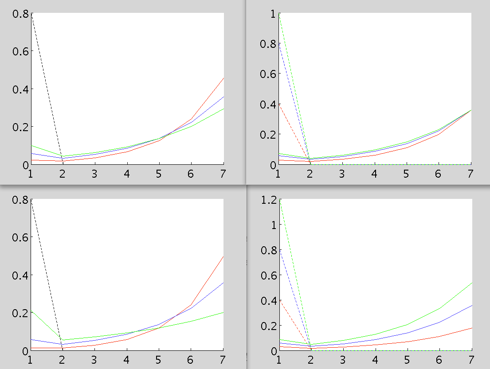
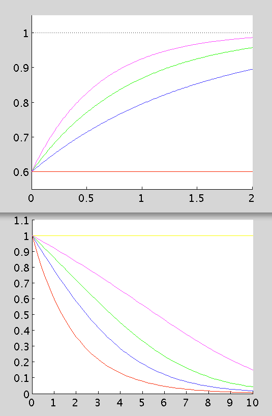
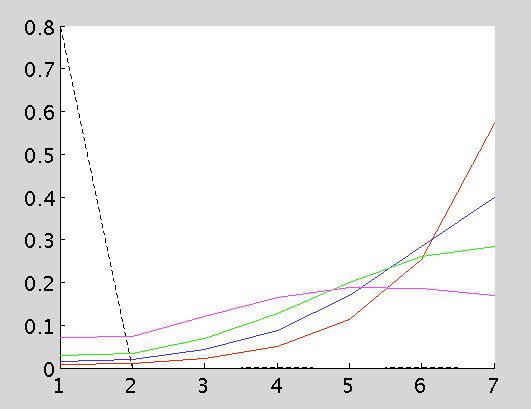
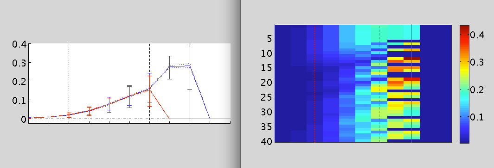

This is a set of MATLAB (MathWorks Inc.) program codes for conducting
calculations or simulations and making figures for the following
paper:
Kenji Morita and Ayaka Kato (2014). Striatal dopamine ramping may
indicate flexible reinforcement learning with forgetting in the
cortico-basal ganglia circuits. Frontiers in Neural Circuits 8:36.
doi:10.3389/fncir.2014.00036
The codes can be freely used for the purposes of research and
education; please cite the paper mentioned above when publishing
results obtained by using the codes.
We hope that the codes can be run in various versions of MATLAB, but
we have run the codes primarily in MATLAB 7.6.0 (R2008a) (ModelDB
administrator: also ran in 8.1.0 R2013a) and it is not ensured if they
can be run in the other versions. Notably, the codes have been
modified and/or rewritten from the original codes used during the
research process so that readability has been enhanced and excess
parts have been eliminated, but essentially the same results as those
presented in the figures in the paper can be re-obtained (the results
shown in Fig. 2 and Fig. 3 in the paper were obtained through
analytical calculations or deterministic simulations (please see also
the following note for Figure 2Cd); the results shown in Fig. 4 in the
paper were obtained through stochastic simulations, but the
pseudo-random numbers used in the simulations were saved so that the
same results can be reproduced by using those saved pseudo-random
numbers (please see the comments in "make_Fig4.m" for details).
Note (corrigendum to the paper)
In the preparation of the program codes for submission to the ModelDB,
we have noticed that there was an error in the code for making Figure
2Cd written by one of the authors Kenji Morita. Specifically,
although RPE values at S1 (the start of the maze) for the cases with
decay (i.e., the leftmost points of the three solid lines) should be
proportional to the amount of reward as appeared in the formula for
calculating them (in the right-bottom of page 4 of the paper), they
were incorrectly plotted as an equal value in Figure 2Cd because the
variable representing the amount of reward ('R') was mistakenly
dropped (i.e., effectively assumed to be 1 in all the cases) in the
code. We have corrected the code, which is attached here. We will
submit the correction, with the corrected Figure 2Cd, to the journal
(Frontiers in Neural Circuits) as a Corrigendum. We sincerely
apologize for the inconvenience.
Explanation of the files
"make_Fig2.m", "make_Fig3.m", and "make_Fig4.m" are script M-files for
making Figure 2C, Figure 3B, and Figure 4C(a,b),Db,E(a,b),Fb,
respectively. Please see each file for the explanation of usage. You
should get figures that look like the below when running make_Fig2:

make_Fig3:


and make_Fig4:

"simImaze.m" and "simTmaze.m" are function M-files used in the script
M-files for making figures.
"rands_for_choice_Fig4C.mat", "rands_for_choice_Fig4D.mat",
"rands_for_choice_Fig4E.mat", and "rands_for_choice_Fig4F.mat" are mat
files used in the script M-files for making figures.
Correspondence
Dr. Kenji Morita
Physical and Health Education, Graduate School of Education, The
University of Tokyo
7-3-1 Hongo, Bunkyo-ku, Tokyo 113-0033, Japan
morita@p.u-tokyo.ac.jp